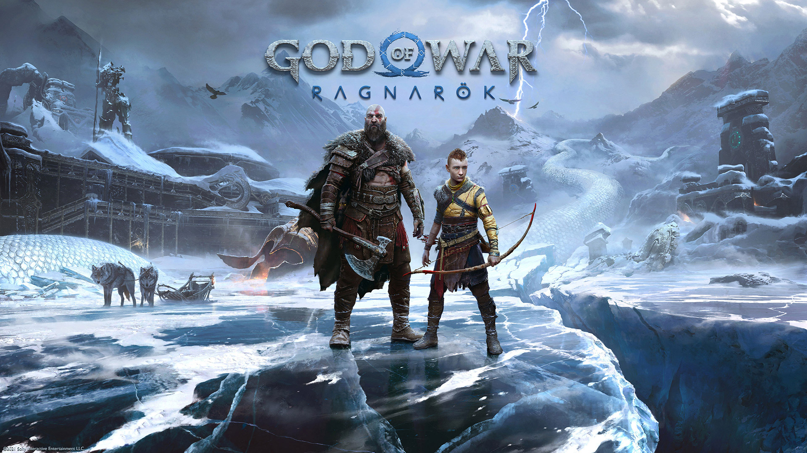

God of War
God of War est un jeu vidéo d'action-aventure développé par Santa Monica Studio et publié par Sony Interactive Entertainment. Il est sorti en 2018 sur PlayStation 4 et plus tard sur d'autres plateformes. Ce jeu suit l'histoire de Kratos, le dieu de la guerre, qui se retrouve dans un monde nordique où il doit affronter des créatures mythologiques tout en élevant son fils, Atreus. Le jeu a été salué pour sa narration poignante, son gameplay raffiné et sa représentation immersive des mythes nordiques.
Le joueur incarne Kratos, qui, après avoir tué les dieux de l'Olympe, cherche maintenant à changer sa destinée. Aux côtés de son fils Atreus, il explore un monde vaste et ouvert, affrontant des ennemis puissants et des dieux redoutables. Les joueurs découvrent une relation père-fils émouvante et font face à des combats intenses tout en résolvant des énigmes et en collectant des artefacts mythologiques pour renforcer leurs capacités et leur équipement.
God of War est sorti le 20 avril 2018. Ce jeu acclamé par la critique a marqué un tournant dans la saga avec un changement de direction audacieux, combinant des éléments de gameplay d'action avec une forte dimension narrative. La relation entre Kratos et Atreus, ainsi que l'exploration du monde nordique, ont captivé les joueurs, faisant de ce titre un succès mondial et un incontournable pour les amateurs de jeux d'action-aventure.

God of War Ragnarok